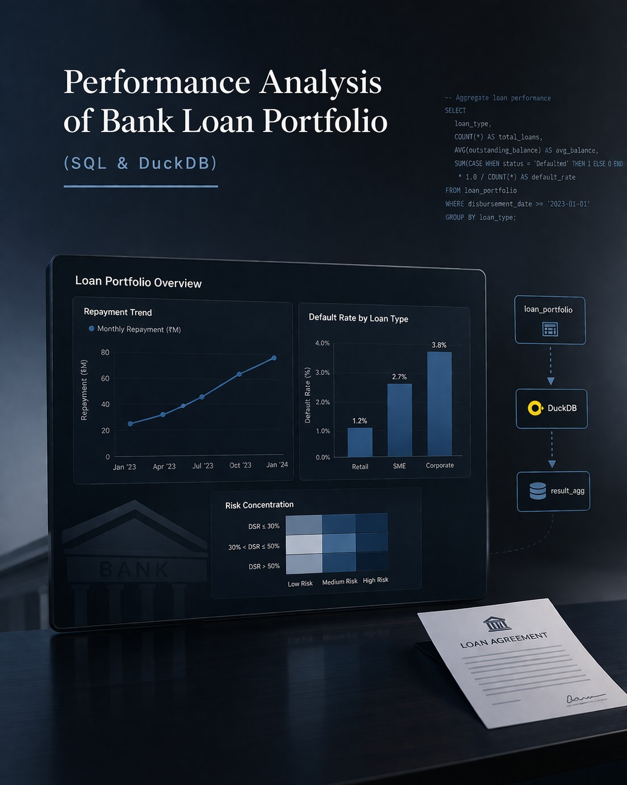
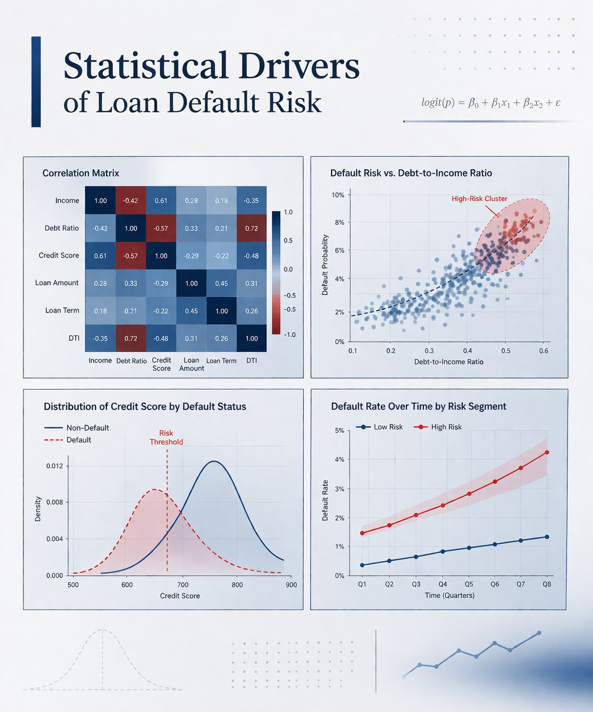

Princewill Chibundu Portfolio
Senior Data Analyst | Power BI | Risk & Financial Analytics | SQL • Python • R | Turning Complex Data into Decision Intelligence @uniqueprince
I help business leaders and financial institutions turn complex data into risk-aware decisions through analytics, dashboarding, and AI-enabled insight generation.
Portfolio Overview
Why This Portfolio Matters
This portfolio is a curated body of work showing how I use analytics, business context,
and AI-enabled thinking to solve real-world problems across risk management, portfolio monitoring,
operational reporting, and executive decision support.
This project evaluates credit portfolio concentration risk and stress sensitivity using a structured loan dataset. It demonstrates how statistical risk findings can be translated into executive-ready Power BI dashboards that support portfolio monitoring, scenario testing, and risk-based decision-making.
- Identified concentration risk hidden within seemingly strong-performing credit segments
- Built executive and operational dashboard views for different decision audiences
- Applied stress scenarios to reveal portfolio fragility under worsening credit conditions

This project analyzes a simulated bank loan portfolio using SQL and DuckDB to assess default risk, exposure concentration, and customer-level risk drivers. The work was designed to answer practical risk and executive reporting questions while surfacing data quality issues that could distort business decisions.
- Used SQL to uncover default patterns, exposure concentrations, and portfolio outliers
- Flagged data quality issues that would materially affect downstream analysis
- Produced decision-ready insights grounded in structured, risk-aware querying

This project uses statistical analysis to identify the drivers of loan default risk and build an Early Warning Indicator framework. The goal was to move beyond descriptive reporting and create a more structured basis for watchlist management, escalation logic, and risk intervention.
- Compared segment-level default behavior to identify emerging risk patterns
- Translated statistical findings into operational monitoring logic
- Connected analytical output to practical actions for portfolio oversight
If you are hiring for analytics, business intelligence, risk reporting, or AI-enabled decision support roles, I would be glad to connect.